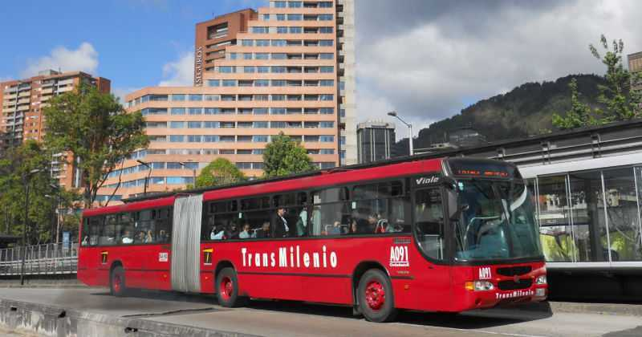

Aumento de precio del pasaje de Transmilenio 2019
11 de Enero 2019
La Secretaría de Movilidad dio a conocer que ya tiene listo
el decreto que dará paso a la aprobación del aumento en la
tarifa a Transmilenio.
El pasaje quedará en $2.400 y el del SITP en $2.200.